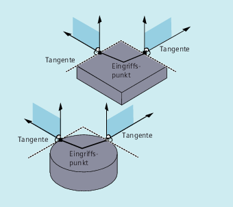
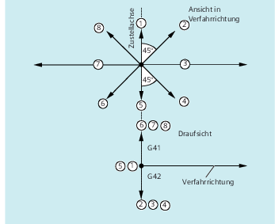

Rückzugsbewegung
Die Ebene der Rückzugsbewegung wird durch folgende G-Befehle bestimmt:
-
LFTXTDie Ebene der Rückzugsbewegung wird aus der Bahntangente und der Werkzeugrichtung bestimmt (Standardeinstellung).
-
LFWPDie Ebene der Rückzugsbewegung ist die aktive Arbeitsebene, die mit den G-Befehlen
G17,G18oderG19ausgewählt wird. Die Richtung der Rückzugsbewegung ist unabhängig von der Bahntangente. Damit ist ein achsparalleles Schnellabheben programmierbar. -
LFPOSRückzug der mit
POLFMASK/POLFMLINbekannt gemachten Achse auf die mitPOLFprogrammierte absolute Achsposition.ALFhat keinen Einfluss auf die Abheberichtung für mehrere Achsen sowie für mehrere Achsen im linearen Zusammenhang.
Programmierbare Verfahrrichtung (ALF=…)
In der Ebene der Rückzugsbewegung wird mit ALF die Richtung in diskreten Schritten von 45 Grad programmiert.
Die möglichen Verfahrrichtungen sind in der Steuerung unter speziellen Code-Nummern gespeichert und unter dieser Nummer abrufbar.
Beispiel:
| Programmcode | |
|---|---|
| N10 SETINT(2) PRIO=1 ABHEB_Z LIFTFAST | |
| ALF=7 |
Das Werkzeug fährt bei eingeschaltetem G41 (Bearbeitungsrichtung links von der Kontur) senkrecht von der Kontur weg.
Bezugsebene für die Beschreibung der Verfahrrichtungen bei LFTXT
Im Eingriffspunkt des Werkzeugs an der programmierten Kontur wird eine Ebene aufgespannt, die als Bezug für die Angabe der Abhebebewegung mit der entsprechenden Code-Nummer dient.
Die Bezugsebene wird aufgespannt aus der Werkzeuglängsachse (Zustellrichtung) und einem Vektor, der zu dieser und senkrecht zur Tangente im Eingriffspunkt des Werkzeugs an der Kontur steht.
Code-Nummern mit Verfahrrichtungen bei LFTXT
Ausgehend von der Bezugsebene finden Sie in folgender Abbildung die Code-Nummern mit Verfahrrichtungen.
Für ALF=1 ist der Rückzug in Werkzeugrichtung festgelegt.
Mit ALF=0 ist die Funktion "Schnellabheben" ausgeschaltet.
 | Vorsicht |
KollisionsgefahrBei eingeschalteter Werkzeugradiuskorrektur sollten:
nicht verwendet werden, da in diesen Fällen das Werkzeug zur Kontur hinfahren und mit dem Werkstück kollidieren würde. |
Code-Nummern mit Verfahrrichtungen bei LFWP
Bei LFWP ergibt sich die Richtung in der Arbeitsebene nach folgender Zuordnung:
G17: X/Y-EbeneALF=1: Rückzug in X-RichtungALF=3: Rückzug in Y-RichtungG18: Z/X-EbeneALF=1: Rückzug in Z-RichtungALF=3: Rückzug in X-RichtungG19: Y/Z-EbeneALF=1: Rückzug in Y-RichtungALF=3: Rückzug in Z-Richtung